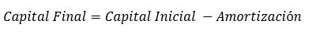

Recordemos que este tipo deuda se caracteriza porque el monto del pago que se realiza en cada uno de los periodos es siempre el mismo. Siendo los montos de la amortización y el monto de los intereses, los que varian, de tal manera que al sumarlos obtenemos el pago.
1.- El primer paso para hacer la tabla de amortización es calcular el pago que haremos cada periodo, el cual lo obtenemos con la siguiente fórmula: Donde:
2.- El siguiente paso es calcular los intereses con la fórmula mostraba abajo, recordando que el capital inicial para el primer periodo es el monto del préstamo.
3.- El tercer paso es calcular el monto de la amortización restando el monto de los intereses al monto del pago que calculamos previamente.
4.- Finalmente calculamos el monto del capital final restando el monto de la amortizacion al monto del capital inicial. 
De esta manera seguimos haciendo los calculos para el resto de los periodos, recordando el monto del capital inicial corresponde al monto del capital final del periodo anterior. Una vez que tenemos los cálculos para todos los periodos ya tenemos nuestra tabla de amortización terminada.